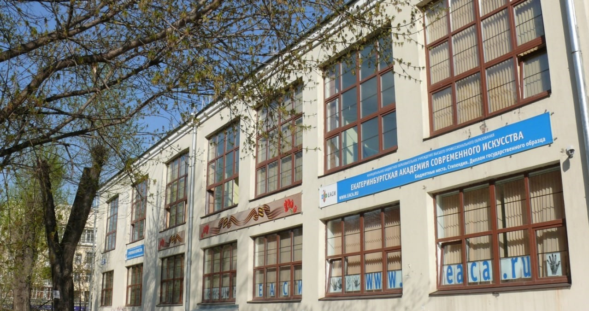

О нас
EACAgram — это социальная сеть, созданная специально для сообщества ЕАСИ. Здесь вы можете загружать и делиться своими фотографиями, а также следить за последними новостями и событиями.
Наш сайт предоставляет следующие возможности:
- Загрузка и публикация фотографий.
- Просмотр ленты новостей с фотографиями ваших друзей и коллег.
- Создание личного профиля с описанием и аватаркой.
- Возможность поиска пользователей и просмотра их публикаций.
- Размещение ссылок на социальные сети в своем профиле.
О ЕАСИ
Миссия академии - служение интересам Екатеринбурга, развитие творческого интеллектуального потенциала города, консолидация усилий научно-педагогической, управленческой и культурной элиты для подготовки профессионалов высокого уровня, владеющих современными технологиями трансформации социокультурных процессов и пространств.
Учреждение и развитие академии есть условие реализации муниципальнои политики в сфере культуры в контексте Стратегического плана развития Екатеринбурга и Стратегической программы «Екатеринбург - мегаполис культуры и искусства».
Вуз создан в 2006 году для подготовки квалифицированных специалистов, способных эффективно решать актуальные задачи развития культурного пространства города.
ЕАСИ - единственный муниципальный вуз в Уральском регионе, драйвер развития культурного пространства города сразу в трех направлениях.
ЕАСИ - это качественное образование. Здесь ведется практикоориентированная подготовка современных специалистов культуры для всех участников креативного кластера Екатеринбурга.
ЕАСИ - это динамично развивающаяся научно-исследовательская площадка для изучения трендов развития аудитории культуры и постиндустриальных пространств мегаполисов.
ЕАСИ - это активно функционирующая «фабрика» современного искусства, поставляющая социокультурные проекты и творческие произведения на различные культурные площадки Екатеринбурга